Information Management
IM Cell PMI
Platform pembelajaran Information Management untuk Tim IM Cell PMI. Bukan kelas formal, langsung praktik, langsung berguna di posko.
Mulai BelajarTentang Platform Ini
IM Cell PMI dirancang untuk kamu relawan lokal yang sedang atau akan bertugas di posko bencana. Semua materi langsung terkait dengan kerja nyata: dari setup sistem, analisis data, sampai menyusun paket data untuk RenOps.
Kamu bisa belajar secara tidak berurutan. Butuh cara cepat hitung PIN? Langsung buka topiknya. Mau cek apakah data siap dikirim? Pakai checklist QA.
Mulai Belajar
Pilih topik sesuai kebutuhanmu di posko:
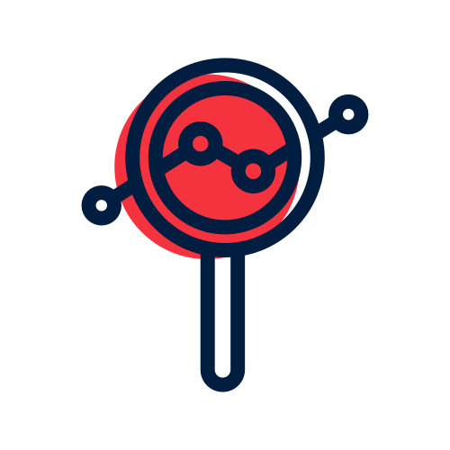
Memahami IM
Apa itu Information Management, peran IM Cell PMI, siklus kerja harian, dan prinsip triangulasi.
Mulai dari sini jika baru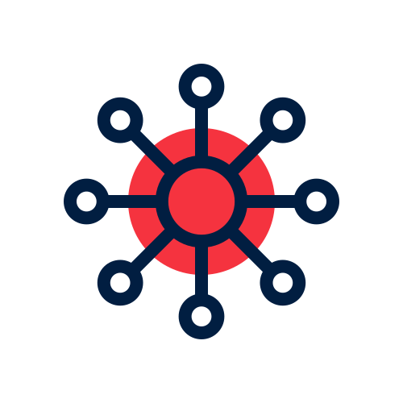
Setup & Orientasi Sistem
Onboarding akses, MS Teams, SharePoint, GitHub Kanban semua yang harus siap di hari pertama.
Hari pertama di poskoTools Operasional
Data sekunder dan triase sumber, KoboToolbox, Excel, QGIS, Power BI.
Saat mulai pegang data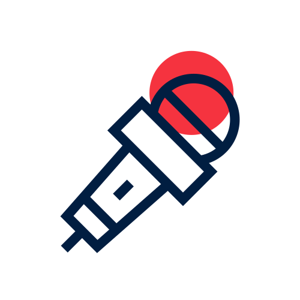
Analisis Kebutuhan
Tiga pilar analisis IFRC, mengidentifikasi info gap, dan wawancara informan kunci (KII).
Saat data mulai masuk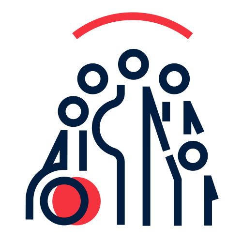
PIN & Prioritas
Menghitung People in Need, lapisan data, rasio kebutuhan sektoral, dan analisis prioritas.
Untuk hitung kebutuhan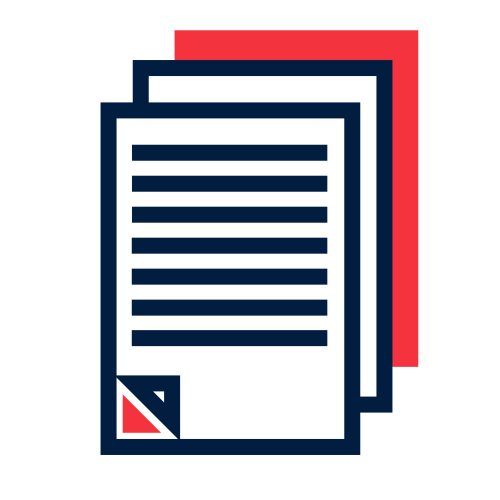
Produk IM
SitRep, harmonisasi data sektoral, matriks 4W, Impact Tracker cara buat output IM yang benar.
Saat harus melapor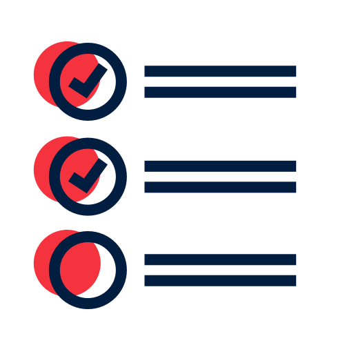
Paket Data RenOps
Komponen paket data pendukung RenOps, standar kualitas, dan tips visualisasi.
Untuk dukung keputusanPeran Relawan Lokal
Menjadi penghubung data lapangan dengan tim IM Pusat lewat Kobo, Excel, dan produk sederhana.
Untuk relawan di lokasiGrafik Referensi Cepat
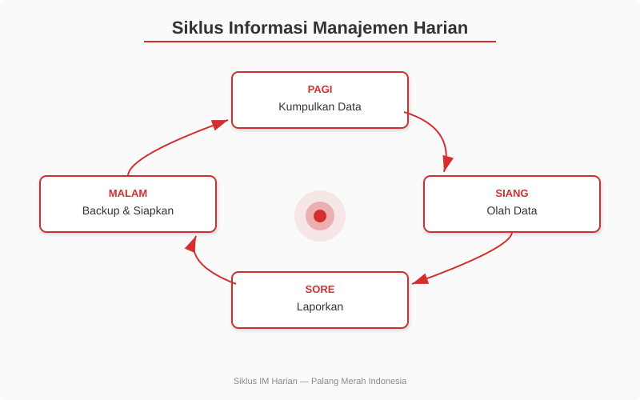
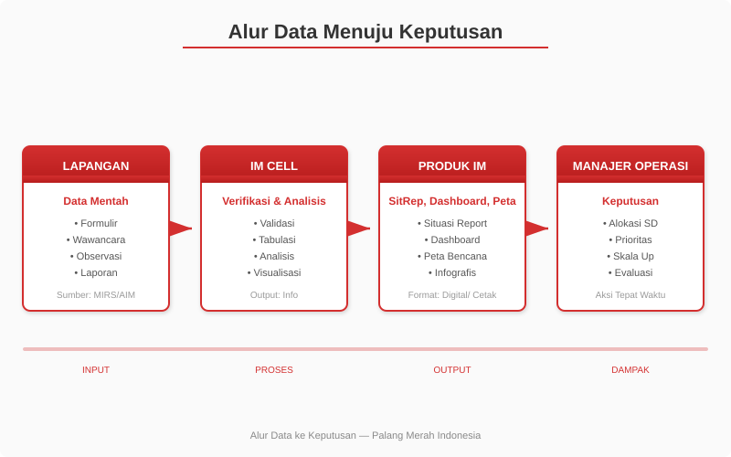
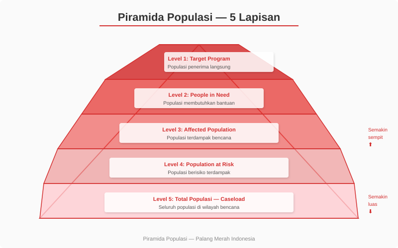
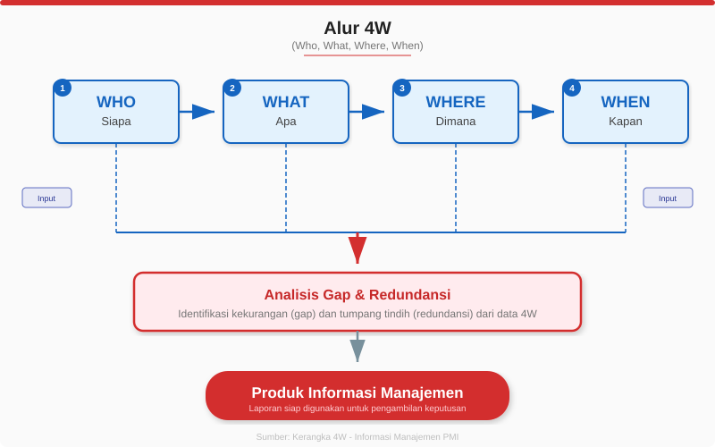
Berkontribusi
Kontribusi dari relawan, pendamping, atau siapa pun di komunitas IM Cell PMI sangat terbuka.
Repo: github.com/indrautomoputra/elearning-im
Panduan
- Fork repository ini ke akun GitHub kamu.
- Buat branch untuk perubahanmu:
git checkout -b fix/typoataufeature/nama-fitur. - Lakukan perubahan - pastikan mengikuti pola dan struktur yang sudah ada.
- Uji perubahan - buka file HTML di browser, pastikan tidak ada error.
- Buat Pull Request - jelaskan apa yang diubah dan mengapa.
Yang Bisa Dibantu
Konten
Memperbaiki typo, menambahkan contoh lapangan, memperbarui data
Visual
Menambahkan grafik, diagram, atau infografis baru
Kode
Memperbaiki bug CSS/JS, meningkatkan aksesibilitas, optimasi performa
Konten Baru
Menambahkan topik baru, panduan tool, atau studi kasus
Laporkan Masalah
Buka issue di GitHub
Pedoman Konten
- Gunakan bahasa Indonesia yang sederhana dan praktis
- Hindari jargon yang tidak perlu; jika ada, jelaskan
- Setiap topik harus punya contoh lapangan dan tugas praktik
- Tulis dari sudut pandang relawan di posko
- Sertakan kapan harus eskalasi ke IM senior
Pedoman Kode
- CSS: Gunakan design tokens dari
tokens.css - JS: Ikuti gaya kode yang sudah ada (vanilla JS)
- HTML: Setiap halaman harus punya aksesibilitas dasar
- Pastikan mode terang dan gelap tetap terbaca
- Uji di Chrome dan Firefox sebelum Pull Request